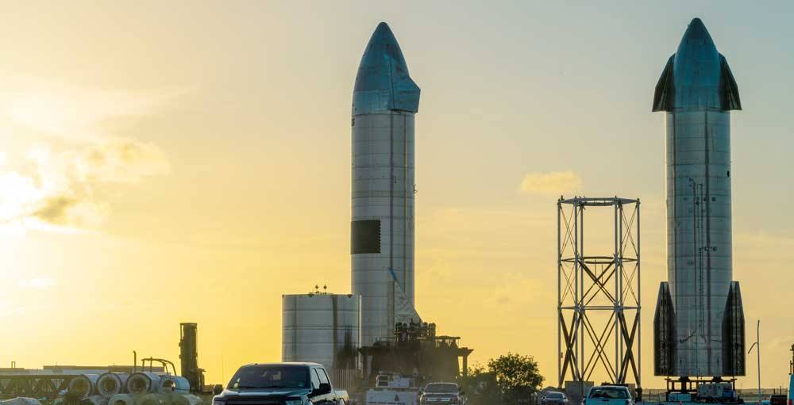

Starship Flight 15 Lifts Off, but Booster Catch Aborted; Ship 42 Still Aims for Saturday Return
SpaceX launched Starship Flight 15 at 22:47 UTC on November 13, 2026, but the Super Heavy booster catch was aborted: the flight timeline records one engine failing to relight during boostback, and Investor's Business Daily reports a safety-check issue sent Booster 22 to an offshore Gulf landing that appeared successful, with SpaceX to investigate. Ship 42 reached orbit and still aims for the first-ever upper-stage tower catch on Saturday, November 14, about 21:17 UTC, after deploying 26 Starlink V3 satellites. Dual-verified: Investor's Business Daily read in full plus the Wikipedia flight timeline (citing SpaceX) read in full; liftoff time confirmed by Florida Today's live blog.

- 01THE LAUNCH — SpaceX launched Starship Flight 15 from Orbital Launch Pad 2 at Starbase, Texas, at 22:47 UTC on November 13, 2026, two minutes into its 75-minute window. The 407-foot-tall rocket's 15th flight was the first attempt to recover both stages of an orbital rocket at the launch site.
- 02THE ABORTED CATCH — The Super Heavy booster catch was aborted: the flight timeline records one engine failing to relight during the boostback burn, and Investor's Business Daily reports a safety-check issue sent Booster 22 to an offshore Gulf landing that appeared successful, with SpaceX to investigate. Ship 42 reached orbit and its 26 Starlink V3 satellites were scheduled to deploy from about 35 minutes after liftoff.
- 03THE WATCHPOINT — The first-ever upper-stage tower catch remains planned for about 21:17 UTC on Saturday, November 14, gated on the ship passing its reentry, landing-burn and tower-approach health checks; otherwise Ship 42 diverts to the ocean. Even a successful catch leaves the first V3 booster catch and the turnaround-speed test for later flights.
WHAT HAPPENEDWhat Happened
SpaceX launched Starship Flight 15 from Orbital Launch Pad 2 at Starbase, Texas, on November 13, 2026, lifting off at 22:47 UTC, two minutes into its 75-minute window, Investor's Business Daily reported and Florida Today's live blog timed at 5:47 p.m. ET. The 407-foot-tall (124 m) rocket's 15th flight was the first attempt to recover both stages of an orbital rocket at the launch site: the Super Heavy booster was to fly back minutes after liftoff and be caught by the tower's mechanical arms, and Ship 42 was to deploy 26 next-generation Starlink satellites, circle Earth 14 times, and attempt the first-ever catch of an orbital upper stage about 22 hours later.
The booster catch did not happen. The flight timeline records the boostback burn as a partial success, with one engine failing to relight, and the landing burn starting at T+6:10 before the catch at T+6:35 was aborted and the booster diverted to the Gulf of Mexico. Investor's Business Daily independently reports that the Super Heavy booster experienced an issue with a safety check and diverted for an offshore landing rather than a tower catch as planned, that the offshore landing appeared successful, and that SpaceX said it will investigate the booster to discover the issue.
Ship 42 kept flying. The timeline records Starship engine cutoff at T+8:09 as a success, with the orbital insertion burn and the deployment of the 26 Starlink V3 satellites to follow. SpaceX still plans to attempt to catch the ship on its return, assuming it passes all safety checks, Investor's Business Daily reports, with the return planned for about 21:17 UTC on Saturday, November 14. The mission is the second Starship flight to carry operational Starlink satellites, after Flight 14 in September reached orbit and deployed satellites but ended early after an engine issue.
WHY IT MATTERSThe abort is the safety system working, not a lost rocket
A diverted booster is the contingency plan executing as designed, and that distinction matters for judging the flight. SpaceX built the Gulf splashdown as the booster's fallback, and the webcast made clear all along that the tower catch would only be attempted if the safety checks passed. The booster performed a landing burn and came down offshore, apparently successfully, instead of risking the pad, the tower and the next flight. The cost is the headline: no fourth tower catch, no first V3 catch, and no double recovery on this flight.
The engine detail is the part to watch next. The flight timeline records one engine failing to relight during the boostback burn, and flights 12 and 13 had already shown engine relight as the program's live technical problem. SpaceX said it will investigate the booster, and the findings will decide whether the next attempt is a quick repeat or a longer stand-down. The ship's half of the mission is unaffected for now: it is in orbit, and its catch attempt on Saturday is a separate test with its own health gates.
WHAT TO WATCHSaturday's ship catch is now the whole mission
With the booster diverted, the double catch is off the table and the flight's remaining prize is the ship. Watch the Starlink deployment first, then the three scheduled return checks across the coast, and finally the deorbit burn about 21:36 UTC on Saturday, with the landing burn and catch attempt at about 22:32 UTC mission time, roughly 21:17 UTC. The ship only returns to the launch site if its reentry, landing burn and tower-approach systems pass their checks; otherwise it diverts to the ocean.
Even a successful ship catch leaves the reusability case half-proven: the booster half still needs its first V3 tower catch, and the turnaround-speed test, readying both stages for another flight quickly, remains unanswered. SpaceX has said it aims for weekly Starship launches in the first half of 2027, and the Florida pad at Kennedy Space Center is nearing readiness as a second launch site.
SIGNAL JUDGMENT — ANALYSISHalf the double catch is gone; the ship is the test now
Tokenta Signal's judgment: The booster abort stings because the double catch was the headline, but the mission's logic survives it. SpaceX chose the safe fallback over a risky tower attempt, and a booster that lands offshore on purpose is a recoverable setback, not a lost vehicle. The real verdict now rides on Ship 42: a first-ever upper-stage catch on Saturday would still make Flight 15 historic, while a second abort would leave the program with two failed catches in one flight and the relight problem to fix. Judge the mission on Saturday afternoon, not on the booster alone.
WHAT REMAINS UNCERTAINWhat Remains Uncertain
EVIDENCEEvidence
Investor's Business Daily, 'SpaceX's Starship Flight 15 Takes Off, Rocket Lab Preps For Milestone Mission,' by Harrison Miller, published November 13, 2026, read in full. It reports that SpaceX launched Starship Flight 15 from Starbase on Friday evening, that liftoff occurred shortly after 5:45 p.m. ET, that the Super Heavy booster experienced an issue with a safety check and diverted for an offshore landing rather than a tower catch as planned, that the offshore landing appeared successful, that SpaceX said it will investigate the booster, and that SpaceX still plans to attempt to catch the Starship on its return, assuming it passes all safety checks. The Wikipedia flight timeline for Starship flight 15, read in full and citing SpaceX, records the boostback burn as a partial success with one engine failing to relight, the landing burn starting at T+6:10, and the catch at T+6:35 as a failure with the landing aborted and the booster diverted to the Gulf; Florida Today's live blog timed liftoff at 5:47 p.m. ET.
PRIMARY SOURCESPrimary Sources
- Investor's Business Daily: SpaceX's Starship Flight 15 Takes Off, Rocket Lab Preps For Milestone Mission
https://www.investors.com/news/spacex-starship-flight-15-launch-tower-catch-elon-musk-rocket-lab-electron-milestone-spcx-stock-rklb/ - Wikipedia: Starship flight 15
https://en.wikipedia.org/wiki/Starship_flight_15 - Florida Today: SpaceX Starship to launch from Texas today, attempt double catch: Live updates
https://www.floridatoday.com/story/tech/science/space/spacex/2026/11/13/spacex-to-launch-starship-today-from-texas-attempt-double-catch--live/92759273007/